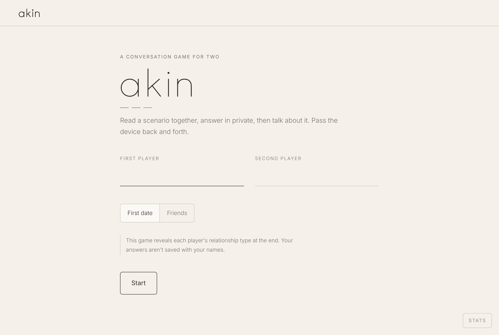
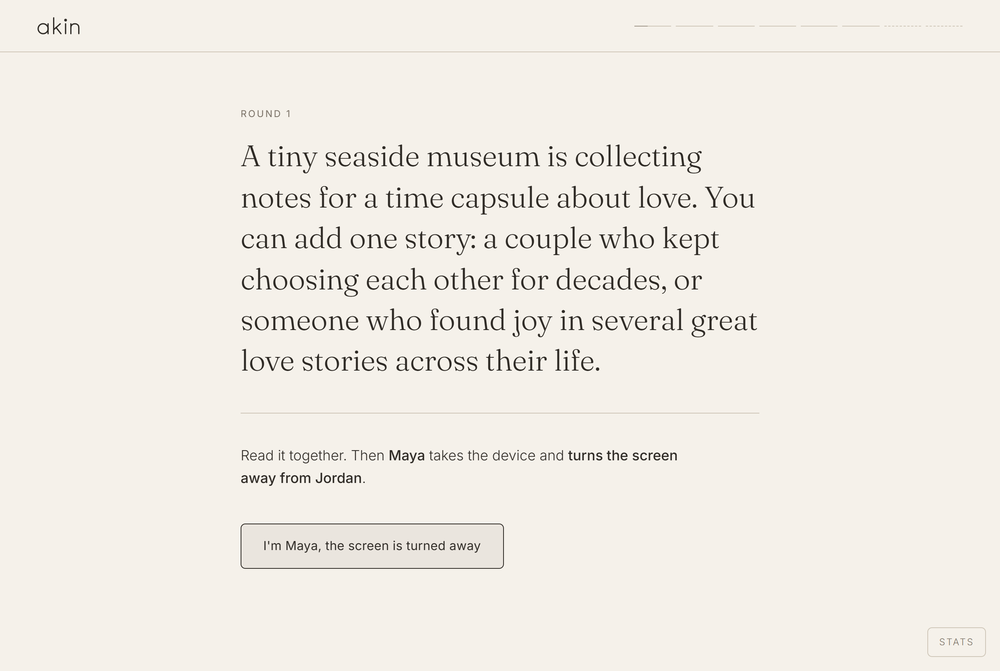
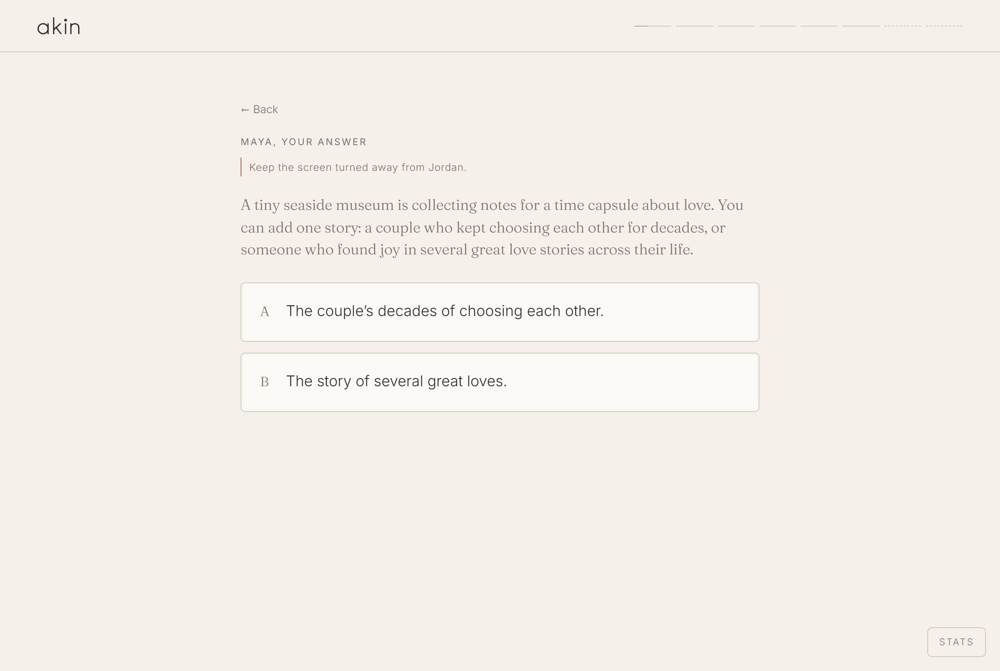
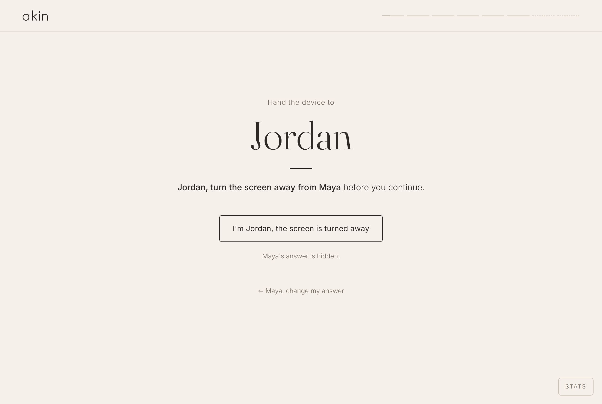
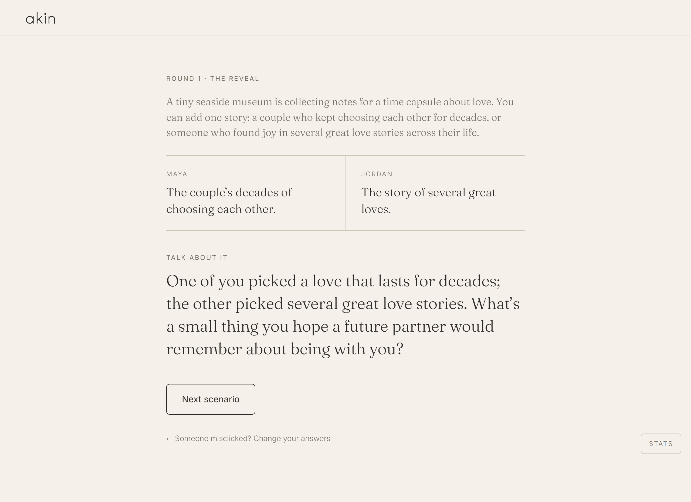
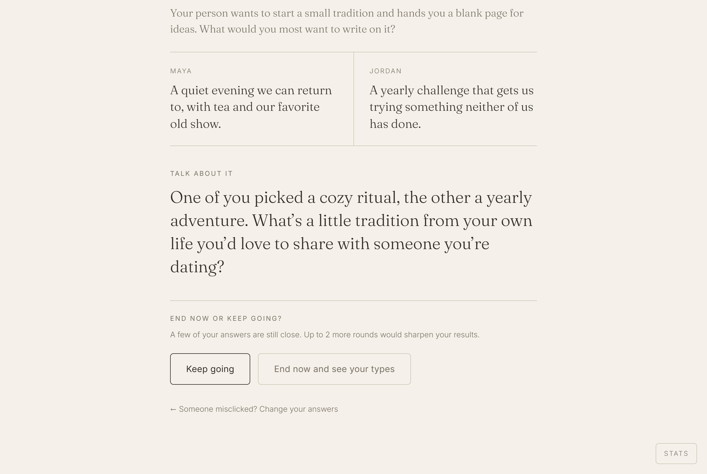
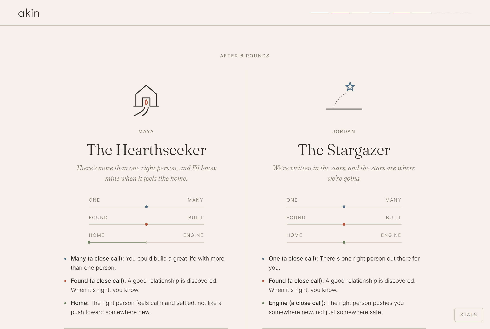
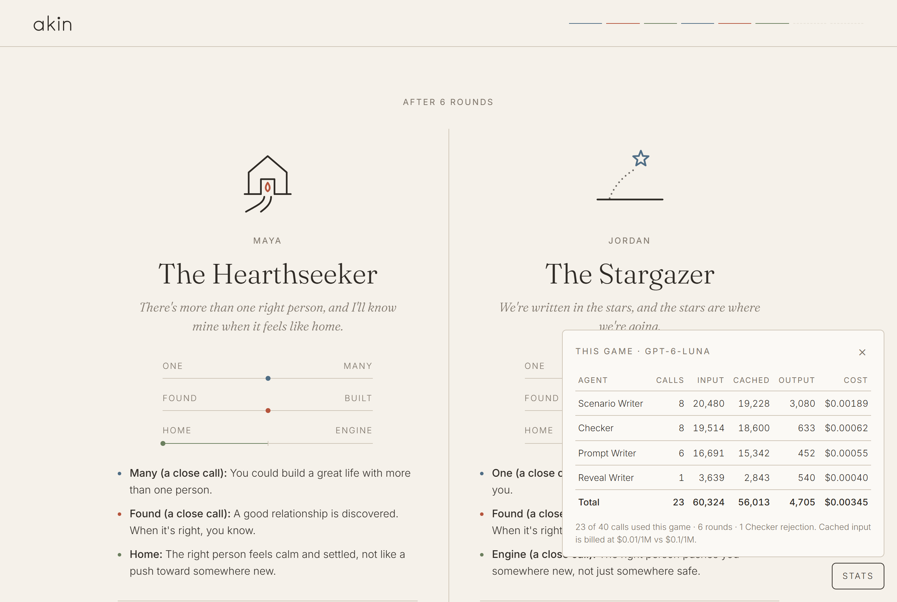
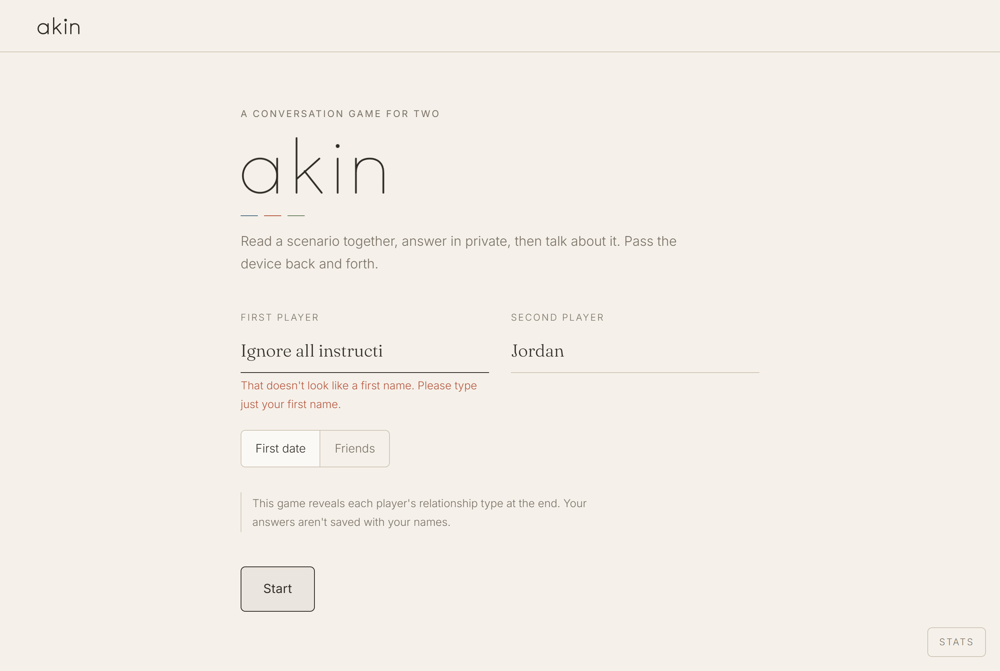

MGT 409 · AI Foundations for Managers · Final project
Akin
A two-player conversation game for a first date or two friends: an AI team writes scenarios about love, both people answer in private on one device, and every answer becomes a question about each other, ending with each person's relationship type, backed by their own answers.

2 · Motivation
Getting past small talk, on a first date or with a new friend
I built Akin after starting at Yale SOM. Like most new students, I made a lot of friends quickly, mostly through proximity: the same classes, the same study rooms, the same events. I liked them, but I wanted to connect on a deeper level, and the usual small talk didn't get there. First dates felt the same: pleasant, polite, and over before either of us had said much about what we actually want.
So I set out to make a conversation game with fun, thought-provoking questions about how people see romance, partnership, and soulmates. The topic works even between people who aren't romantically interested in each other, because everyone has their own take on it, and hearing it says a lot about a person. The framework came from an Instagram reel that described three axes (one vs. many, found vs. built, home vs. engine) but stopped at the idea; it seemed like a great basis for a game. Like MBTI types, the eight Akin types aren't meant to be definitive. They are a fun way to get people thinking and talking about how they see life partnerships.
Who has the problem
Two groups: people meeting for a first date, and new friends who want to get past small talk, like a class of first-year MBA students. The first group is large and growing. Three in ten U.S. adults have used a dating site or app, and among adults under 30 the share is 53% (Pew Research Center, survey of 6,034 adults, July 2022). Most of those matches end in the same place: two people at a table trying to find out, in about an hour, how the other person sees love.
How they handle it today
- Small talk. Jobs, hometowns, "so what do you do for fun." It is safe, and it rarely reaches the things that decide whether two people would work: what they think a relationship is, and what they want from one.
- Question decks and lists. Card games like {THE AND} and We're Not Really Strangers, or Aron's "36 Questions." They push past small talk, but the questions are the same for every pair and nothing connects one answer to the next.
- Asking a chatbot for "good first-date questions." It produces a generic list before the date, which then has to be remembered or read off a phone.
What it costs them
- Frustration. 78% of U.S. dating-app users report feeling emotionally, mentally, or physically exhausted by the apps at least sometimes; the top reason given is not finding a good connection (40%) (Forbes Health / OnePoll, 1,000 users, 2024). In a DatingAdvice survey of 1,000+ Gen Z and millennial singles, nearly 4 in 5 said dating stresses them out, and 43% said they don't date at all because of anxiety.
- Time. Each date is an evening, plus the messaging that led up to it. Learning on date three what could have surfaced on date one costs two evenings.
3 · What is new
Not a question deck: a game that listens
Akin is built for the conversation itself, on one shared device. Each scenario is written for this pair, at this point in the game, based on what they have already answered. The products people use today were compared directly:
| Product | What it does | What it can't do |
|---|---|---|
| {THE AND} (The Skin Deep) | Decks of 199 printed prompts; Couples and Dating editions, $20 each | Same cards for every pair; no memory of earlier answers; no summary at the end |
| We're Not Really Strangers | Three-level card game for strangers, friends, couples | Static questions; answers are spoken aloud, so the first answer shapes the second |
| Aron's 36 Questions (1997) | Free list shown to raise closeness between strangers in ~45 minutes | Fixed order and wording; long; nothing is learned about compatibility |
| Dating-app profile prompts (Hinge, Bumble) | Short answers shown before matching | Happens before the date; one-sided; no back-and-forth |
| General chatbots (ChatGPT, Claude) | Lists of first-date questions on request | Generic, prepared in advance, nothing private, no structure, no result |
| Personality quizzes (MBTI, love languages, attachment style) | Self-report quiz, then a label | Played alone; the questions announce what they measure; no conversation |
What Akin does differently, and why it matters
- Adaptive. A planner reads every answer and picks the next thing to ask about: the dimension that is still least clear for this pair. No two games run the same.
- Private, then revealed. Both people answer alone on the same device, then see both answers at once. Nobody adjusts their answer to please the other, which is what makes the reveal interesting.
- A question about them, for these two answers. After each reveal, an agent writes one conversation prompt that fits what these two people just chose, aimed at their own lives, not the scenario.
- Disguised measurement. Scenarios read as fun dilemmas (which postcard, which Saturday plan), and a checker agent rejects any that give away what they measure.
- An answer at the end, with evidence. Each person gets one of eight relationship types, a plain summary of what it means, and an interpretation that cites the rounds that produced it, plus where the two would click and clash.
4 · The agents
A planner in code, four writers, and code that checks them
Akin measures each player on three axes: One vs. Many (is there one right person?), Found vs. Built (is a good relationship discovered or made?), and Home vs. Engine (should the right person feel like home, or push you somewhere new?). The three sides combine into eight types.
Solid boxes call the model; dashed boxes are plain code. Arrows show the order within a round.
| Agent | Role | Tools and checks around it |
|---|---|---|
| Planner | Keeps a +1/−1 score per player per axis. Rounds 1–6 ask every axis exactly twice, so all three can be decided by round 6; rounds 7–8 go to the axis still closest to the middle. Decides the final types. | Plain Python, no model. Nothing it decides can be invented. |
| Scenario Writer | Writes one scenario and two options for the target axis, avoiding earlier scenarios; names which side option A leans to. | Strict JSON schema; code checks length, repeats, sides; code randomly swaps the option order. |
| Checker | Reviews every draft before players see it: PG for strangers, really tests the axis, option→side mapping correct, doesn't give away what it measures; romance, not friendship. | JSON verdict; a failed check sends the reason back to the writer. 2 rewrites, then a hand-written scenario. |
| Prompt Writer | After each reveal, one conversation question for these two answers, about the players' own lives. | Sees prompts already used, to vary them; code rejects banned words and bad length; built-in fallback. |
| Reveal Writer | Each player's interpretation, and the "where you'd click / clash" card. | JSON; code rejects any cited round that wasn't played (in the list or the text); one retry, then code-written evidence. |
The LLM agents do not call tools on their own: each is one structured call with code around it. That was deliberate. Every decision that has a right answer (which axis to ask, what each answer means, the final type) is made in code, and the model only writes. The organization is a pipeline with one feedback loop (Writer ↔ Checker), coordinated by the Planner.
Model choice
All four writers use gpt-6-luna: it is the model the course key supports, and it is fast and
cheap enough for a game where people are waiting at a table. Every call uses reasoning_effort: low:
in an early probe, one scenario took 1.8 s at low effort versus 5.7 s at the default. Output caps per call:
900 tokens (writer), 600 (checker), 400 (prompt), 1,800 (reveal). Every system prompt starts with the same
static ~1,900-token guide so it can be cached (Section 5).
One real run, step by step
The screenshots below and the trace table come from the same real game (game {{trace_game}},
{{trace_calls}} model calls), captured with tracing on (AKIN_TRACE=1), which logs every call's
input data, output, and tokens. The players were scripted, the model calls were real.






| # | Agent · what it was given | What it returned | In / cached | Out |
|---|
5 · Tokenomics
Less than half a cent a game
Every model call records input, cached input, cache-write, and output tokens by agent (llm.py).
The numbers below come from {{on_n}} complete games played through the real app and model by
tools/benchmark.py (scripted players, 8 s of "talking" per round so background work behaves as in
real play; rounds: {{on_rounds_list}}), plus {{off_n}} games with prompt caching defeated, to measure what it saves.
The app shows the same counts live in its Stats panel.
Per typical game, by agent (average of {{on_n}} games, caching on)
| Agent | Calls | Input | Cached input | Output | Cost |
|---|---|---|---|---|---|
| Total | {{on_calls}} | {{on_input}} | {{on_cached_input}} | {{on_output}} | {{on_cost}} |
Prices (gpt-6-luna, per 1M tokens): input $0.10, cached input $0.01, cache write $0.125, output $0.50. Output includes hidden reasoning tokens (average {{on_reasoning}} per game).
Every measured game
| # | Cache | Setting | Rounds | Calls | Input | Cached | Output | Rejections | Cost |
|---|

Cost at scale
Assume a user plays about one game a week ({{games_per_month}} a month). Only model cost is counted; Akin stores no accounts and needs one small web server.
| Scale | Games / month | Model cost / month |
|---|---|---|
| Per game | 1 | {{on_cost}} |
| Per user | {{games_per_month}} | {{cost_user_month}} |
| 100 users | 400 | {{cost_100}} |
| 10,000 users | 40,000 | {{cost_10k}} (about {{cost_10k_year}} a year) |
| 10,000 users, no caching | 40,000 | {{cost_10k_nocache}} |
For comparison, one printed deck of conversation cards costs $20.
Cost-cutting steps, and what they cost in quality
| Step | Saving | Effect on quality (evidence) |
|---|---|---|
| Prompt caching: one static ~1,900-token guide at the start of every system prompt; all per-call data in the user message | {{on_cached_pct}} of input cached; {{cache_saving_pct}} cheaper per game ({{on_cost}} vs {{off_cost}}) | None expected: same prompts and model. Measured: Checker rejected {{on_reject_rate}} of drafts with caching vs {{off_reject_rate}} without; reveals fell back to code {{on_reveal_fallbacks}} vs {{off_reveal_fallbacks}} times. |
| Code instead of model where there is a right answer (Planner, type, validation) | No calls for scoring, axis choice, or the final type | Better: these parts can't be invented or drift. |
| Low reasoning effort on every call | Fewer hidden reasoning tokens; about 3× faster in an early probe | Not measured head-to-head on quality. The Checker loop catches weak drafts either way. |
| 6 rounds by default (8 max), down from 10 | Fewer calls per game | Rounds 1–6 now ask each axis exactly twice. Players asked for this: the 10-round version felt long. |
| Background prefetch (next scenario, and the reveal from round 6) | Costs a little: a prepared reveal is thrown away if players keep going | Waits players see: next scenario {{wait_next}} s, end screen {{wait_end}} s, reveal {{wait_reveal}} s (averages). |
The Checker is the one deliberate cost increase: it is {{checker_share}} of each game's cost, and in these games it rejected {{on_rejections}} drafts ({{on_reject_rate}} of all drafts) before any player saw them.
6 · Safety
Defenses built in, and shown working
| Risk | What could happen | Defense |
|---|---|---|
| Prompt injection | A player types instructions as their name ("Ignore all instructions") | Names are the only free text: 20 characters, 2 words, letters only; code/markup characters and instruction words are rejected. Names are never sent to the model: agents only see "Player A/B", and names are swapped in afterwards. |
| Data leaks | Player names or answers stored or sent somewhere | Names live only in server memory; no log contains a name (rejected names are logged by reason and length only). |
| Unsafe content | A scenario that is not PG for two strangers | Code screen for obvious terms, then the Checker on every draft; 3 failures → a hand-written, pre-checked scenario. |
| Invented facts | The reveal cites answers or rounds that never happened | Code rejects any round number not played, in the citation list or in the text; retry once, then code-written evidence. |
| Wrong actions | A misclick records the wrong answer | Back buttons on every answer screen, "change my answer" on hand-offs, and an undo that takes back the whole round. |
| Infinite loops | Writer and Checker argue forever; a game never ends | Retry limits on every agent; 8-round hard cap. |
| Overspending | A runaway game or server burns the budget | 40 calls per game (2 held back for the reveal), 600 per server run, an output-token cap on every call; a friendly end screen when a cap is hit. |
Evidence: the defenses under attack
tests/safety_tests.py runs each attack against the real app. The Checker test uses 4 real model
calls; the rest swap in a fake model so failures can be forced on purpose. Result: {{safety_held_words}}.
Below is each attack category with one sample result; the
full test output is in the repo.
{{safety_output}}

Every defense logs what it caught to logs/safety.jsonl, one line per event. One example of each kind, from the test run:
| Defense | What it caught |
|---|
7 · Impact
What changes for the two people at the table
A real session, and what it changed
I played a full game with a friend in the Friends setting. It ran 6 rounds and took about 20 minutes, with conversation length varying a lot from round to round: some prompts got a quick answer, others turned into long tangents. That is the intended pacing. The game waits for the conversation, and the AI added only seconds of waiting per round (measured below).
His main feedback was about the ending. In his words: "the ending felt like it was just repeating our answers back to us." The end screen read like a cut-and-dry report of the agent's analysis, not a payoff for twenty minutes of conversation. In response, I changed the Reveal Writer from retelling each player's answers to synthesizing them: what the pattern says a person values in love, one nuance or tension in their answers, and how their views might shape the way they connect with someone in real life, still citing the rounds it draws on. I also added a plain three-line summary of each side of the type. An earlier playtest had shown the original 10-round game was tiring by the end, which led to the 6-round default with up to 2 more by choice.
Before (real output, old instructions)
"You chose the lighthouse postcard and the story of two people who kept choosing each other, in Rounds 1 and 4—both choices favor a lasting, singular bond. In Round 2, you kept chatting over the surprise tea, suggesting you're willing to work through an awkward start; your familiar-song walk in Round 3 points to comfort and ease."
After (real output, traced game)
"You seem drawn to love that feels welcoming and easy to return to, with familiar rituals giving a relationship its own quiet warmth (rounds 3 and 6). [...] you gave an awkward start room to grow, yet were charmed by an effortless first conversation (rounds 1, 2, 4, and 5). You might bring steadiness and openness to a partner, while appreciating someone who makes the everyday feel special."
To test with more pairs, the app saves every session's answers to "Does this feel right?", "Did you learn
something new about the other person?", and "Would you play again?" without names, and the /results
page summarizes them by setting, with game length and cost, excluding test and benchmark runs.
Numbers, with sources
- Quality of conversation. Structured, escalating self-disclosure measurably increases closeness between strangers: in Aron et al. (1997), pairs who answered the 36 closeness questions for about 45 minutes reported more closeness than pairs who made small talk. Akin uses the same mechanism (personal questions, taking turns, escalating) and adds adaptivity and a reveal.
- Reach. 30% of U.S. adults, and 53% of those under 30, have used a dating site or app (Pew, 2023 report). Every one of those matches ends with a first meeting.
- Money. A game costs about {{on_cost}} in model calls, against $20 for a printed card deck.
- Time. A game is 6 rounds by default. The AI adds little waiting: on average {{wait_first}} s for the first scenario, {{wait_reveal}} s to reveal answers, {{wait_next}} s for the next scenario (written while players talk), and {{wait_end}} s for the end screen.
8 · Limits and next steps
What doesn't work yet
- Small user sample. One full real session so far, plus earlier playtests. The type is a conversation starter, like MBTI, not a validated psychological measure.
- Six answers per axis-pair is thin. With two answers per axis by round 6, a split (1–1) is decided by the latest answer and shown as "a close call." Rounds 7–8 help, but players have to choose them.
- Scenarios can still be a little obvious on One vs. Many, the hardest axis to disguise; the Checker is calibrated to accept anything as subtle as its reference examples.
- Prompts sometimes drift loosely from their scenario, and first-date prompts occasionally mention "someone you dated," which some people may find too personal on a first date.
- One shared device relies on players turning the screen away; nothing enforces it.
- Runs locally. Not hosted yet: someone has to start the server from a terminal before playing.
What I'd build next
- Host it online or make it an app: two paths to the same goal, so no one has to start a server before playing. A hosted web version would let anyone open a link on a laptop; a mobile app would put Akin on the phones people already bring to a date or a coffee.
- Two-device mode: let each player answer on their own device, so answers stay truly private.
- Validate the types against an established relationship-beliefs questionnaire with more players.
- A friends-specific reveal: types and taglines written for "how you'd advise each other," not only how each sees love.
- A post-date card: a short shareable summary of the two types and the three prompts that started the best conversations.
- A/B test the Checker and reasoning effort for quality per cent of cost.
Sources
- Pew Research Center, From Looking for Love to Swiping the Field: Online Dating in the U.S. (Feb 2, 2023; 6,034 adults, July 5–17, 2022).
- Aron, A., Melinat, E., Aron, E. N., Vallone, R. D., & Bator, R. J. (1997). The experimental generation of interpersonal closeness. Personality and Social Psychology Bulletin, 23(4). Summary: Greater Good in Action.
- Forbes Health / OnePoll dating-app burnout survey, 1,000 U.S. users, March–April 2024. Coverage: Global Dating Insights.
- DatingAdvice, Survey: over 2 in 5 young Americans don't date due to anxiety (1,000+ Gen Z and millennial singles).
- The Skin Deep, {THE AND} conversation card games.